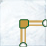
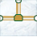

Pipes
Description
The game is simple. Given a series of pipes, figure out what rotation each tile should have so that the gas flows to every house. It is not necessary that every pipe be used. Gas flows from any gas tank to every connected pipe. The pipe lines wrap around both horizontally and vertically (meaning that if I have gas flowing out of the bottom of the board, it will provide gas to the top tile of the same column if it has a pipe to receive it). A Gas tank can have 1, 2, or three pipes connected to it. There are three kinds of pipes, three kinds of Gas tanks, houses, and blank tiles.
Tile Types
Blank Tiles
Blank Tiles are just tiles that have nothing interesting in the location. Gas cannot flow through them.

L Pipe
L Pipes with an elbow bend in them, and can be oriented in 4 different directions.
| L Pipe | Direction |
|---|---|
| North | |
|  | East |
| South | |
| West |
I Pipe
I Pipes are straight, either vertically or horizontally aligned. While you are allowed to orient them in 4 directions (North, South, East, West), there is no difference to the game mechanics if the I Pipe is North vs. South, or East vs. West.
| I Pipe | Direction |
|---|---|
| North & South | |
| East & West |
T Pipe
T Pipes have two pipes meeting in a T intersection. They can be aligned in all 4 directions.
| T Pipe | Direction |
|---|---|
|  | North |
| East | |
| South | |
| West |
Gas Tank
Gas Tanks are the source of gas. If a pipe is adjacent to one of its pipes, gas will flow into it. There is no limit on how far gas can flow from a Gas Tank. There will often be more than one Gas Tank per level.
There are three types of Gas Tanks, each only differing in how many pipes are connected to them.
| One Pipe Gas Tank | Direction |
|---|---|
| North | |
| East | |
| South | |
| West |
| Two Pipe Gas Tank | Direction |
|---|---|
| North | |
| East | |
| South | |
| West |
| Three Pipe Gas Tank | Direction |
|---|---|
| North | |
| East | |
| South | |
| West |
House
Each House only has one pipe, and it can be oriented in all 4 directions. A level is not considered complete until gas is flowing to every house.
Input
A level is described using a simple text file describing a board. Each board is always 7x10. Here is an example board:
_______ __HH__H __II_HT _HLTHIT _TIT__I _I_H_HI _IH__TL _LTTIL_ ___I___ ___1___
Symbols
| Symbol | Meaning |
| _ | Represents a blank tile |
| H | Represents a House |
| I | Represents an I Pipe |
| L | Represents an L Pipe |
| T | Represents a T Pipe |
| 1 | Represents a One Pipe Gas Tank |
| 2 | Represents a Two Pipe Gas Tank |
| 3 | Represents a Three Pipe Gas Tank |
Output
The expected output is a 7x10 character text file, similar to the input. The difference is that instead of a symbol describing the type of tile, you instead provide an orientation to each non-blank tile:
_______ __SS__S __NN_EW _SNWEEW _EEW__N _N_N_SN _NS__EW _NNSEW_ ___N___ ___N___
N, E, S, W mean North, East, South, and West, respectively. The underscore is used for each blank tile. For I Pipes, there is no difference between N and S, or E and W.
Board Wrap-Around
As mentioned in the introductory description, pipes can wrap both vertically and horizontally around the board.
Here's the input for this board:
_I_____ I2___HI _______ _______ _______ _______ _______ _______ _H_____ _I_____
Here's the expected output:
_N_____ EW___EE _______ _______ _______ _______ _______ _______ _S_____ _N_____
How to Participate and Judging
Submissions should be emailed to <email address pending> by November 1st, 2016. Please include instructions on how to run your program and any setup that is necessary.
Submissions will be judged first on correctness, then on speed of execution. So if two contestants' submissions get the same number of problems correct, the contestant who had the faster running submission will be considered the winner.